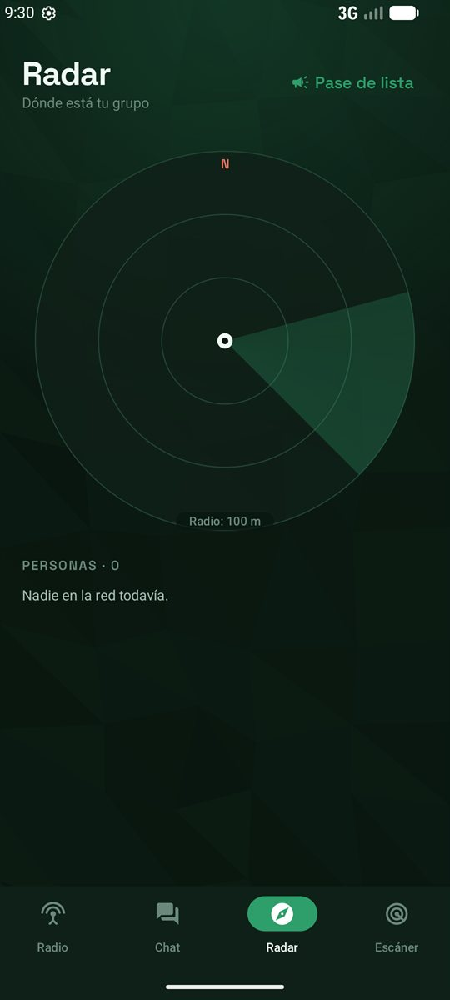

Habla con tu grupo aunque no haya señal.
Quindello convierte tu Android en un walkie talkie: voz, chat, SOS y radar entre teléfonos cercanos, por Bluetooth. Para la montaña, conciertos y emergencias.
Listo en tres pasos
Sin registrarte, sin número de teléfono y sin configurar nada.
Instálala en todo el grupo
Antes de salir, mientras todavía hay internet. Pesa solo 2 MB.
Elijan la misma frecuencia
Del 01 al 99, como un walkie talkie. O creen una privada y cifrada.
Mantén presionado y habla
Te escuchan al instante. También con el botón de bajar volumen.
Voz de verdad, como un radio
No es un chat con audios: presionas, hablas y tu grupo te escucha en vivo. Un solo emisor a la vez, con el "beep" al terminar.
- Voz comprimida: funciona incluso con poca conexión entre teléfonos
- Sigue encendido con la pantalla apagada
- Chat de texto en la misma frecuencia
SOS que se escucha aunque no mires
Mantén presionado 2 segundos: tu grupo recibe tu ubicación, suena una sirena y se repite cada minuto hasta que alguien llegue.
- Suena por el volumen de alarma, aunque tengan la música en cero
- Estados rápidos: Me perdí, Estoy herido, Espérenme
- Pase de lista para saber que todos están bien
Encuentra a quien se alejó
El radar muestra hacia dónde y a qué distancia está cada persona, con GPS y sin internet. Toca a alguien y una flecha te lleva hasta él.
- Distancia en vivo e indicaciones: "Gira a la derecha"
- Vibra cuando apuntas bien: camina sin mirar la pantalla
- Batería y estado de cada uno

Frecuencias privadas
Cifradas, con admin, roles e invitación por QR. Quien reenvía tus mensajes no puede leerlos.
Avisos en el bolsillo
Los mensajes llegan como notificación y respondes sin abrir la app.
Aguanta todo el día
Modo Ahorro solo con Bluetooth, y Supervivencia para aguantar días.
Nada sale a internet
Sin cuentas, sin servidores y sin analíticas. Tus datos se quedan en los teléfonos del grupo.
Mientras más personas, más lejos llega
Cada teléfono funciona como repetidor. Si Ana está lejos de Pedro pero Luis está en medio, el mensaje pasa por el teléfono de Luis automáticamente.
Donde la señal no llega o se satura
Montañismo y trekking
Volcanes, páramos y senderos sin cobertura.
Conciertos y estadios
Cuando la red celular colapsa, tu grupo sigue hablando.
Emergencias
Sismos, apagones o caída de la red: SOS y pase de lista.
Zonas rurales
Fincas, comunidades y lugares con poca señal.
Familias y viajes
Parques, ferias o cruceros sin roaming.
Rescate y equipos
Scouts, brigadas y cuadrillas con roles y frecuencias privadas.
Lo que más nos preguntan
¿Funciona sin internet ni señal?
Sí. No usa datos móviles, Wi-Fi de internet ni servidores. Los teléfonos se conectan directamente por Bluetooth, y por Wi-Fi directo en modo Rendimiento.
¿Qué alcance tiene?
Unos 100 m al aire libre entre dos teléfonos, y de 10 a 50 m entre paredes o en el bosque. Con la red mesh, cada teléfono intermedio suma más alcance.
¿Es gratis? ¿Necesito una cuenta?
Es gratis, sin anuncios, y no necesita cuenta, número de teléfono ni correo.
¿Alguien puede escuchar mis conversaciones?
En las frecuencias públicas, sí: como en un walkie talkie real, cualquiera en esa frecuencia te escucha. Para hablar en privado, crea una frecuencia privada: va cifrada con AES-256-GCM y solo entra quien el admin acepta.
¿Gasta mucha batería?
En modo Ahorro (por defecto) usa solo Bluetooth y el GPS se enciende solo cuando hace falta. El modo Supervivencia está pensado para aguantar días.
¿Por qué pide ubicación si no usa internet?
Android exige el permiso de ubicación para buscar otros teléfonos por Bluetooth. El GPS solo se usa para el radar, para buscar a alguien y para el SOS. Tu ubicación nunca sale a internet.
¿Funciona en iPhone?
Por ahora solo en Android 8.0 o superior.
Instálala hoy, antes de necesitarla
Sin internet no se puede descargar: que todo tu grupo la tenga antes de salir.
- Descarga el APK desde el botón.
- Ábrelo y permite instalar apps de origen desconocido.
- Pon tu nombre y elige la misma frecuencia que tu grupo.
Versión 0.5.0 · 2 MB · Android 8.0+
¿Tienes la v0.4 o anterior? Desinstálala primero (solo esta vez: la app ahora tiene su firma definitiva).